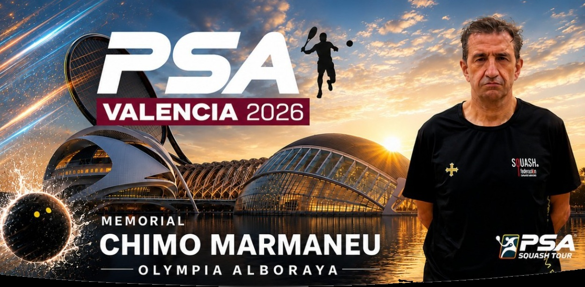

PSA VALENCIA 2026
ES
VA
EN
FR
PSA WORLD TOUR
PSA
Valencia
2026
11–15
2026
Memorial Chimo Marmaneu
Olympia Alboraya
--
--
--
Min
--
Seg

11–15 Agosto 2026
Olympia Alboraya
Memorial Chimo Marmaneu
11
11 Agosto 2026
12
12 Agosto 2026
13
13 Agosto 2026
14
14 Agosto 2026
15
15 Agosto 2026
Sergio Garcia Pollan
Yassin Elshafei
Samuel Osborne
Daniel Poleshchuk
Aly Tolba
Mohamed Nasser
PSA
Olympia Alboraya
Club Squash Valencia